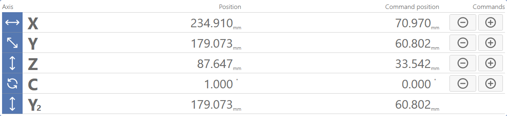
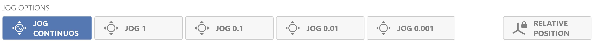
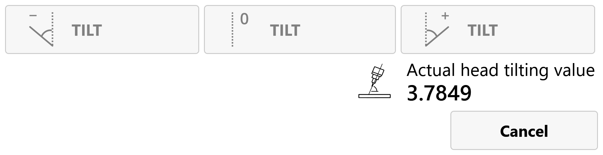
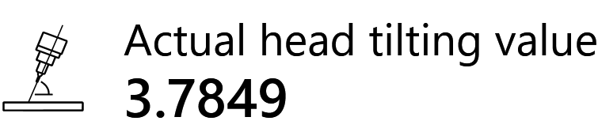

The upper area displays the absolute and relative machine positions and allows machine movement to be controlled.

Positive axis movement Moves the machine in the POSITIVE direction along the selected axis. The movement depends on the active JOG mode.
Negative axis movement Moves the machine in the NEGATIVE direction along the selected axis. The movement depends on the active JOG mode.
JOG mode
This central panel allows you to select the increment for manual axis movement and also enable the relative axis position.

Continuous JOG Allows continuous movements to be performed.
JOG 1 Allows movements of 1 mm for each JOG pulse.
JOG 0.1 Allows movements of 0.1 mm for each JOG pulse.
JOG 0.01 Allows movements of 0.01 mm for each JOG pulse.
JOG 0.001 Allows movements of 0.001 mm for each JOG pulse.
Relative axis position Enables display of the relative axis coordinates.
NOTE
When this function is enabled, the machine center coordinates and the coordinates relative to the position of the machine at the moment the function was enabled are displayed.
Commands
The following commands are available in Manual mode:
Rapid mode Allows the machine to move more quickly in JOG mode.
Remote Control enable Enables use of the Remote Control.
Vacuum pump Turns the vacuum pump on or off.
External water enable Turns the external spindle water on or off.
Internal water enable Turns the internal spindle water on or off.
T-axis inclination (Optional) Allows the head axis inclination to be controlled and displayed for adjustment.
Lower telescopic devices Allows the telescopic devices to be lowered.
Raise telescopic devices Allows the telescopic devices to be raised.
Head inclination commands (Optional)

Negative axis inclination Tilts the head T axis in the negative direction.
No axis inclination Moves the T axis to the 0_ position; the spindle direction is therefore perpendicular to the worktable.
Positive axis inclination Tilts the head T axis in the positive direction.

Current inclination display Displays the current T-axis inclination in degrees.